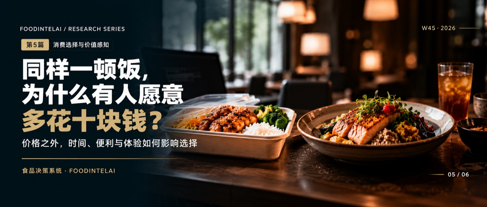

降价11.5%，订单只涨7.8%：价格之外，消费者还在为什么付钱消费任务与跨业态替代研究 · 第5篇 价格以外的选择因素 ｜ QTOS-DEMAND-001-EFoodIntelAI 研究组 · 沧林 ｜ 2026年11月6日 ｜ W45专题 5/6遇见小面降价11.5%，订单只涨了7.8%；小菜园降价11.6%，翻台率涨了12.9%。降价买到的量，有没有把降掉的价补回来？第五篇不去推算消费者愿意付多少钱，只做一件事：列出价格以外的变量，标出哪些必须靠调查验证。
图｜FoodIntelAI W45 系列（共 6 篇），本篇为第 5 篇。2026年上半年，两家上市餐企都在降价。遇见小面的订单平均消费额下降11.5%，同店日均订单增长7.8%；小菜园堂食人均消费下降11.6%，翻台率从每天3.1次升到3.5次，增长12.9%。降价买到了量，但买到的量，有没有把降掉的价补回来？文献把订单增幅除以降价幅度，得到一个粗略的数：遇见小面约0.7，小菜园约1.1。小于1，意味着降价买来的量不够补回降掉的价；大于1，意味着基本补上了收入。但这两个数只能叫“表观弹性”，不能当作需求弹性：同期有外卖补贴退坡，有新店，有菜单调整，价格和销量的变化混在一起，没法拆开。笔者测算价格只是消费者选择里的一个变量。降价买不够量，说明还有别的变量在起作用，而这些变量，公开数据里几乎看不见。本篇是W45专题的第五篇，回答提纲里的问题：同样一顿饭，为什么有人愿意多花十块钱。答案不是一个数字，而是一张变量字典：价格以外，消费者在选择里还权衡什么，哪些能用公开数据推断，哪些只能靠消费者调查验证。−11.5%遇见小面订单平均消费额同比（2026年上半年）+12.9%小菜园翻台率（3.1→3.5次／天），堂食人均−11.6%图1 价格下降幅度与量的增幅（2026年上半年，%）金色为增长，黑色为下降，柱长按绝对值绘制。两家的量的口径不同，遇见小面为订单，小菜园为翻台率。第1篇把一顿饭的成本写成价格加时间。要解释“为什么多花十块钱”，需要把变量表再往前走一步。表1是本专题的初始变量字典，每个变量都标出了怎么测、公开数据能不能近似，以及是否必须通过消费者调查验证。价格实付金额小票、支付记录能，企业披露的人均、订单均价时间成本行走、等待、取餐、用餐现场计时、记录表部分，如配送时长口味稳定性每次吃是否一样复购记录、评价部分，如复购率这张表里，“不能”和“部分”占了大半。也就是说，即使有最详尽的企业财报，也只能看到价格这一个变量的结果，看不到其他变量在起作用。这是本专题需要反复强调的边界。研究假设即时性已经被大规模消费：据中物联同城即时物流分会的报告，2025年全国即时配送订单量首次超过600亿单（含餐饮以外的品类）。“不用出门”，已经是一个有人持续为之付费的变量，只是我们不知道，一顿午饭里它到底值多少。文献第1篇的演示表里，餐馆堂食的综合成本是36.6元，便利店是21.0元，差15.6元。这15.6元可以怎么读？一个常见的做法是做问卷：“你愿意多花多少钱”，但问卷里的支付意愿，和真实选择常有很大落差。示意更可靠的读法是反过来：如果一个消费者在两个选项都可得时，选了更贵的那个，那么他从非价格因素得到的好处，至少不低于这个差价。选择，给出的是一个下限。多次选择、多个场景叠加起来，下限才会逐渐收窄成一个范围。这样推算，不需要凭空猜测支付意愿，但前提是，必须有真实的选择记录。研究假设举个例子。一位顾客在连续十个工作日里，七天选了餐馆，三天选了便利店。选餐馆的七天里，他对餐馆的非价格评价，至少不低于差价；选便利店的三天里，他的评价又低于差价。这两类日子的区别，是赶时间还是不赶，一个人还是有同事，就是下一步要追问的变量。示意份量是最容易改变排序的变量。把演示表里的综合成本，除以相对份量，得到单位份量的综合成本（表2）：假设便利店份量是餐馆的0.8倍，商超是0.9倍。示意排序没变，但差距缩小了：便利店从比餐馆低15.6元，缩到低约10元。更有意思的是临界值：只要便利店的份量低于餐馆的57%，它的单位份量成本就会超过餐馆；商超的临界值约是75%。也就是说，在这组假设下，“便利店更便宜”的结论，只在份量不低于约六成时才成立。这样的临界值，才是有用的结论，而不是一个排序。示意回到开头的问题。降价之后，订单要增加多少，才能把收入、把贡献毛利补回来？表3沿用上周选址研究第5篇的示意单位经济（实收客单价28元，贡献毛利12元），假设降价11.5%，在不同的表观弹性下，看收入和贡献毛利的变化。示意表3 降价11.5%之后，不同弹性下的结果（示意）0.7（遇见小面的表观值）+7.8%−4.6%−18.2%1.1（小菜园的表观值）+12.8%−0.2%−14.4%2.8（贡献毛利持平所需）+31.8%+16.7%+0.0%结论很直白：收入大致持平，需要弹性约1.1，而要让贡献毛利不下降，需要弹性约2.8，远高于两家公司的表观值。降价这件事，对收入可能是一个中性的选择，对利润几乎总是一个负的选择，除非降价同时带来了成本的下降，或者带来了新的顾客，而不只是把原有顾客的订单变便宜。示意当然，这只是算术。小菜园上半年收入增长7.0%，同期净利润下降24.3%，公司的解释是主动调整价格以提升性价比；这是一个战略选择，不一定是错的，它可能是在用短期利润换长期的客流和口碑，这需要更长的时间才能检验。文献什么样的证据，才能把表观弹性变成真正的弹性？需要有对照：同一个品牌在不同门店分批调价，调价与未调价的门店同期订单比；或者在选择实验里，让同一批消费者面对不同价格。企业有机会做，外部研究者做不到，这也是公开数据的天花板。研究假设“必须”两项，口味稳定性和场景约束，说的是同一件事：消费者当时想要什么、在意什么，只有消费者自己知道。企业数据只能告诉你他们买了什么，说明不了他们为什么没买别的。这部分，只能靠调查，而且最好是选择实验，让消费者在几个条件不同的选项里做取舍，而不是单纯问“你在意什么”。研究假设尼尔森IQ在2026年1月的报告里提到，中国消费者的逻辑正在从“便宜”转向“值得”，愿意为真正有价值的体验、功能与情绪价值付费。这是机构对趋势的判断，方向上与我们的变量字典一致，但它没有告诉我们：对一顿午饭，这些价值各值多少钱。文献定价之前，先弄清你卖的是哪几个变量。如果你卖的是价格，对手可以更便宜；如果你卖的是时间，对手可以更快；如果你卖的是稳定的口味、舒服的座位或者一桌人聊天的场所，这些很难被价格战拿走。降价之前，先算一遍表3：你需要多少量，才能补回来，现实里有没有可能。定价试验并不复杂：选四家门店调价，另选四家条件相近的不调，各自记录八周的订单、客单价和贡献毛利，再算表3。试验的结果，比任何一个行业的平均弹性都更接近你自己的生意。研究假设降价买来的，是更多的订单；多花十块钱买来的，是价格以外的东西。后者才是定价权。最后一篇整合前五篇：一家食品企业如何识别跨业态竞争，哪些消费任务值得进入，哪些应当放弃，怎样用小规模试验验证替代假设。我们会输出母模型V1.0、替代关系的证据矩阵，以及一张经营决策卡。完整研究 · foodintelai.com 知识库消费任务效用变量字典与敏感性分析，随专题推进陆续沉淀到青藤OS。[1] 遇见小面（HK2408）2026年中期业绩（2026年8月17日），经新浪财经、腾讯新闻、华尔街见闻、蓝鲸财经报道相互核对：订单平均消费额同比下降11.5%；同店单店日均订单372单增至401单，增长7.8%；同店销售额同比下降4.3%。[2] 小菜园（HK0999）2026年中期业绩（2026年8月14日），经华尔街见闻、赢商网、财闻报道相互核对：堂食人均消费57.1元降至50.5元，降幅11.6%；翻台率由3.1次/天升至3.5次/天；收入同比增长7.0%，期内利润同比下降24.3%；公司称利润下降主要由于主动调整价格，导致原材料及员工成本占收入比重上升。[3] 尼尔森IQ报告（新华财经2026年1月8日报道）：中国消费者的消费逻辑从“便宜”转向“值得”，愿意为真正值得的体验、功能与情绪价值付费。为机构对趋势的判断。[4] 表3沿用上周《餐饮选址决策模型》第5篇的示意单位经济：实收客单价28元，食材11.2元，包装0.8元，平台与支付费用按实收10%，损耗与退单1.2元，单笔贡献毛利12元。证据等级：“文献”为上市公司披露或机构公开报告；“笔者测算”为基于上述数据的推算，仅用于判断方向；“研究假设”为本专题的方法设计，尚未经过样本验证；“示意”为演示用的虚构或假设数值。
口径说明：(1) “表观弹性”为订单（或翻台率）增幅除以价格降幅，不是需求弹性：同期的外卖补贴退坡、新店、菜单调整等因素混在其中，无法分离。(2) 遇见小面为订单口径，小菜园为翻台率口径，二者不宜直接比较。(3) 表2、表3为演示用的假设数值，不代表任何真实企业或业态。(4) 本篇不推算消费者的支付意愿，只列出需要被验证的变量。
数据截止：2026年10月24日。声明：本文为行业研究，数据来自公开资料，不构成投资、经营或法律建议。本文在AI辅助下完成起草，经作者审核。